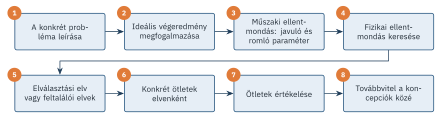

- Mire való? Egy műszaki vagy fizikai ellentmondás megfogalmazása, és feloldási irányok keresése kompromisszum helyett: a 39 általános paraméter, a 40 feltalálói elv, az elválasztási elvek és az ideális végeredmény segítségével.
- Tanulási eredmény: az eszközlap feldolgozása után képes leszel egy műszaki problémát műszaki vagy fizikai ellentmondásként megfogalmazni, és az ellentmondásmátrix, a feltalálói elvek és az elválasztási elvek segítségével feloldási irányokat találni.
- V-lépés: 4. Architektúra (koncepciógenerálás); a részletes tervezésben is használható.
- Bemenet: a minőségház tetőmátrixának negatív kapcsolatai, egymással ütköző követelmények, egy koncepció ismert gyengesége.
- Kimenet: megfogalmazott ellentmondás, választott elvek, konkrét megoldási ötletek értékeléssel.
- Időigény: egy ellentmondás 1–2 óra csapatmunka.
- Kézikönyv: 9. fejezet, 9.5. szakasz.
16.1. Mikor használd?
- Ha a minőségház tetőmátrixában negatív kapcsolat van, és a csapat kompromisszumra készül.
- Ha két követelmény ütközik, és egyik sem engedhető el (például a gyors kezelhetőség és a biztonság).
- Ha egy koncepció egy pontban elakad, és a szokásos megoldások nem működnek.
- Nem való olyan problémára, amelynek ismert, bevált megoldása van: ott elég a szakirodalom vagy a szabvány.
16.2. Lépések

- Írd le a konkrét problémát egy-két mondatban, a környezettel és a korlátokkal együtt.
- Fogalmazd meg az ideális végeredményt: azt a képzeletbeli rendszert, amely a funkciót ellátja, de nincs költsége, káros hatása és helyigénye. Ez segít elszakadni a meglévő megoldásoktól.
- Fogalmazd meg a műszaki ellentmondást: melyik paraméter javítása melyik romlását okozza. Fordítsd le a konkrét jellemzőket Altsuller 39 általános paraméterének nyelvére (Altshuller 1984).
- Keress fizikai ellentmondást: ugyanannak a jellemzőnek két ellentétes értéket kellene felvennie. Ez gyakran a műszaki ellentmondás mögött rejlő valódi probléma.
- Válassz megoldási irányt. Fizikai ellentmondásnál elválasztási elvet: időben, térben, feltétel szerint vagy a rendszerszintek között. Műszaki ellentmondásnál feltalálói elveket; ezek kiválasztását az ellentmondásmátrix segíti, amely a szakirodalomban és a TRIZ-szoftverekben elérhető.
- Írj konkrét ötletet minden választott elvhez. Az elv csak irány; a konkrét megoldáshoz szakmai tudás kell.
- Értékeld az ötleteket megvalósíthatóság és várható hatás szerint.
- Vidd tovább a legjobbakat a koncepciók közé vagy a koncepció módosításaként.
16.3. Kidolgozott példa: a VárosiBringa zárja
A VárosiBringa minőségházában a kölcsönzés gyorsasága és a zár feltörési ellenállása között negatív kapcsolat volt. A sablon „Ellentmondás” lapján a csapat így dolgozott:
| Lépés | Tartalom |
|---|---|
| konkrét probléma | a zár legyen gyorsan nyitható kölcsönzéskor, de nehezen feltörhető |
| ideális végeredmény | a kerékpár magától a helyén marad, amíg a jogosult felhasználó el nem viszi |
| műszaki ellentmondás | javítandó: kezelhetőség (a használat egyszerűsége); romló: szilárdság |
| fizikai ellentmondás | a reteszelőelemnek merevnek és könnyen mozdulónak is kell lennie |
| elválasztási elv | feltétel szerint: jogosulatlan erőhatással szemben merev, jogosult kérésre könnyen mozdul |
| választott elvek | dinamika; megelőző beavatkozás; a mechanikus rendszer helyettesítése |
A három elvből három ötlet született: egy mechanikusan önzáró retesz, amelyet csak hitelesített jelre működő kis aktuátor old ki (dinamika); a kioldás előkészítése már a kölcsönzés jóváhagyásakor (megelőző beavatkozás); és a fizikai ellenállás egy részének kiváltása helymeghatározással és riasztással (a mechanikus rendszer helyettesítése). Az értékelés szerint az első a legjobban megvalósítható és a leghatásosabb; a harmadik az ideális végeredményhez áll a legközelebb, mert a zár szilárdságára kisebb terhelés jut, ha a lopott kerékpár helyzete mindig ismert.
Tanulságok:
- A fizikai ellentmondás gyakran termékenyebb. A műszaki ellentmondás („kezelhetőség kontra szilárdság”) kompromisszumra csábít; a fizikai ellentmondás („merev és mozgékony”) az elválasztás felé terel.
- Az elvek nem adnak kész megoldást. A „dinamika” elv önmagában semmit nem mond a zárról; a konkrét ötlethez zárszerkezeti tudás kellett.
16.4. Sablon
- triz_sablon.xlsx: a 39 általános paraméter magyarul és angolul; a 40 feltalálói elv rövid leírással és általános (ipari, hétköznapi) példával; ellentmondás-munkalap legördülő listákkal (paraméterek, elválasztási elvek, feltalálói elvek), az elvek leírásának automatikus kiírásával és az ötletek értékelésével. A VárosiBringa példájával kitöltve.
A TRIZ-hez nem tartozik notebook: a módszer lényege a csapat gondolkodása, amelyet a számítás nem helyettesít. A 40 elv konkrét alkalmazási ötleteinek előállításában a nyelvi modellek segíthetnek (lásd a mintapromptokat).
16.5. Előnyök és korlátok
| Előnyök | Korlátok |
|---|---|
| Kompromisszum helyett az ellentmondás feloldására irányít | Elsajátítása időigényes; a módszertan összetett (Ilevbare, Probert, és Phaal 2013) |
| Rendszerezett „ötletforrás”: a 40 elv tágítja a megoldásteret | Az elvek általánosak; a konkrét megoldáshoz szakmai tudás kell |
| Az ideális végeredmény segít elszakadni a meglévő megoldásoktól | Az ellentmondásmátrix javaslatai nem minden területen relevánsak |
| Jól kapcsolódik a QFD tetőmátrixához | A sikeres alkalmazás nagyban függ a szervezeti kultúrától (Ilevbare, Probert, és Phaal 2013) |
- Rosszul megfogalmazott ellentmondás. Ha a javuló és a romló paraméter nem valódi ellentmondás (például mindkettő a költség két megjelenése), az elvek nem segítenek.
- Az elvek mechanikus alkalmazása. Az elvek iránymutatók, nem receptek: minden elvhez legalább egy konkrét, a problémára szabott ötletet kell írni.
- Csak az ellentmondásmátrix. A TRIZ eszköztára jóval bővebb; a fizikai ellentmondás és az elválasztási elvek sokszor gyorsabban vezetnek eredményre.
16.6. Mintapromptok
Problémánk: [LEÍRÁS]. Két ütköző követelmény: [A] és [B].
Feladat: (1) fogalmazd meg műszaki ellentmondásként (melyik
paraméter javítása melyik romlását okozza), Altsuller 39 általános
paraméterének nevével; (2) fogalmazd meg fizikai ellentmondásként
(melyik jellemzőnek kellene két ellentétes értéket felvennie);
(3) írd le, melyik elválasztási elv (idő, tér, feltétel,
rendszerszint) tűnik alkalmazhatónak, és miért.
Ne adj még konkrét műszaki megoldást.Ellentmondásunk: [megfogalmazás]. Környezet és korlátok: [LEÍRÁS].
Választott feltalálói elvek: [3–5 elv neve].
Feladat: minden elvhez írj két konkrét, a problémára szabott
megoldási ötletet egy-egy mondatban. Jelöld, ha egy ötlet új
kockázatot hoz be (biztonság, költség, karbantartás).
Ne rangsorold az ötleteket; az értékelést a csapat végzi.16.7. Feladat
Keress saját projektedben legalább egy ellentmondást (például a minőségház tetőmátrixából vagy két ütköző követelményből). Fogalmazd meg műszaki és fizikai ellentmondásként, válassz elválasztási elvet és legalább három feltalálói elvet, írj elvenként konkrét ötletet, és értékeld őket a sablonnal.